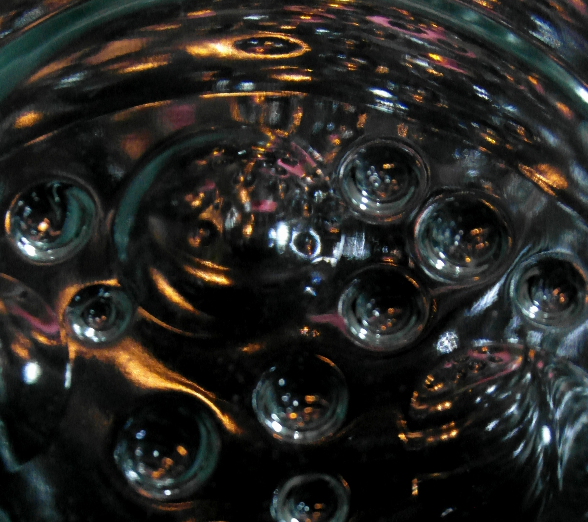

Extraterestrial Reach

You pulled up this website because you either know this or strongly suspect it's true. We're going to reward you for your curiosity. You're going to learn about 5 types of alien beings. You will also learn how to explain them to others in a way that makes sense. When humanity realizes the fact that Aliens are real, there will be a real scramble with people seeking answers and information. Last, but not least, you are going to have interest!
If you really want to learn about Aliens, first bookmark this webpage. Then come back often and read as much as you can. You'll know more than 99 percent of the people on the entire planet about alien beings. Our success or failure in communicating with these unique and fascinating creatures can help us to an increased awareness of our ability to communicate with any "off world" aliens we may encounter.
